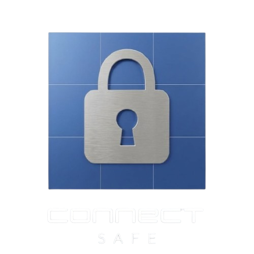

Connect SafeProtección
para quienes más quieres
Pulsera GPS con botón de pánico, geocercas y app. Pensada para niños, adultos mayores y personas en situación de vulnerabilidad. Validada en pruebas de campo.

México necesita protección para todos
68% inseguridad
Población mayor de 18 años se siente insegura en su ciudad (INEGI 2025). Las mujeres reportan 68.2%, hombres 56.7%.
Niños vulnerables
Alto riesgo de extravío y sustracción. Cada año se reportan más de 20,000 desapariciones de menores en México.
Adultos mayores
1.3 millones de personas con Alzheimer (Gobierno de México, 2025) propensas a desorientación y extravío.
Mujeres en riesgo
La violencia de género y el acoso callejero afectan a millones. Se necesita una respuesta rápida y discreta.
Tecnología integral para la tranquilidad
GPS + Red
Precisión híbrida: GPS en exteriores (error <5m) y triangulación por red en interiores (fallback automático).
Botón SOS
Doble pulsación envía alerta silenciosa a contactos de emergencia y al centro de monitoreo C2 en menos de 5 segundos.
Geocercas
Crea zonas seguras (hogar, escuela, trabajo). Notificaciones instantáneas al entrar o salir.
Batería 16h
Optimización de consumo con ESP32 y batería Li-Po de 400mAh. Carga rápida vía USB-C.
App nativa
Disponible para iOS y Android. Interfaz intuitiva, mapa en tiempo real, historial de rutas y estadísticas.
Dashboard C2
Plataforma exclusiva para cuerpos de seguridad. Despacho de unidades en menos de 10 segundos tras recibir una alerta.
Ruta más corta hacia la persona
Integración con Google Maps y Waze.
Resultados que avalan el sistema
Alertas SOS en menos de 5s (31/34 tutores)
App intuitiva y sin fallos (33/34)
Precisión GPS <5m (27/34)
🔍 Hallazgos adicionales: 28 tutores destacaron la claridad de la notificación de emergencia; 21 reportaron fallos en geocercas (en proceso de mejora) y 18 consideraron que las alertas inteligentes requieren optimización. El 100% de los usuarios aceptó usar la pulsera sin molestias.
📊 Tiempo de respuesta promedio: 4.2 segundos desde la activación del botón hasta la recepción en la app.
"La alerta llegó al instante, la app es muy clara y mi familiar se siente seguro con la pulsera."
Metodología y fases de desarrollo
Oct - Nov 2025
Ideación y simulación – Selección de componentes (ESP32 Mini, GPS NEO-6M), simulación en Wokwi, desarrollo del código base en C++ y pruebas de consumo energético.
Dic 2025 - Ene 2026
Ensamblaje y backend – Soldadura de componentes, integración del módulo SIM868 para comunicación celular, diseño de la PCB, y configuración de Firebase + servidor Node.js con Express.
Feb 2026
Ecosistema de software – Desarrollo de app iOS (SwiftUI), Android (Kotlin) y panel web (React) con mapas en tiempo real y sistema de notificaciones push.
15 Feb - 3 Mar 2026
Pruebas de campo – Participaron 34 personas de grupos vulnerables (niños, adultos mayores, mujeres) en entornos cotidianos. Se aplicaron encuestas a tutores y se realizaron ajustes de firmware basados en feedback.
Conectados con la seguridad pública
Seguridad Pública Zaragoza
Integración del dashboard C2 para despacho de unidades en menos de 10 segundos. Capacitación a operadores y pruebas piloto en la cabecera municipal.
Ayuntamiento de Zaragoza
Protocolo de alta preventiva para personas en situación de vulnerabilidad. Se planea implementar 50 unidades en el primer semestre de 2026.
ITS Zacapoaxtla
Se desarrollo junto el equipo del proyecto y accesor. El proyecto forma parte de la incubadora de emprendimiento tecnológico.
Centro de Monitoreo C2
Una herramienta exclusiva para cuerpos policiales que permite visualizar en tiempo real todos los dispositivos Connect Safe activos en el municipio, gestionar alertas y optimizar tiempos de respuesta para la protección de toda la ciudadanía.
Registro de personas vulnerables
Los tutores pueden registrar a niños, adultos mayores, personas con discapacidad o mujeres en situación de riesgo directamente en la plataforma policial. Los datos se validan y asocian a un dispositivo Connect Safe.
- Registro con ID de pulsera, nombre completo, número de celular y domicilio completo
- Asignación de geocercas personalizadas
- Contactos de emergencia adicionales
Monitoreo en tiempo real
Mapa interactivo con todos los dispositivos activos. Cada punto muestra información del usuario, nivel de batería y última actualización.
- Filtros por zona, edad o tipo de riesgo
- Historial de rutas de las últimas 24h
- Alertas visuales y sonoras al recibir un SOS
Alertas inteligentes
El sistema aprende las rutinas diarias del usuario (hora de salida, regreso, etc.) y detecta desviaciones que puedan indicar una emergencia.
- Salida de geocerca sin previo aviso
- Permanencia prolongada en una zona no habitual
- Inactividad del dispositivo (batería baja o apagado)
Diseño de ingeniería de precisión
Arquitectura IoT
Pulsera → Firebase → App / Dashboard C2
Datos cifrados extremo a extremo · Latencia promedio < 2s